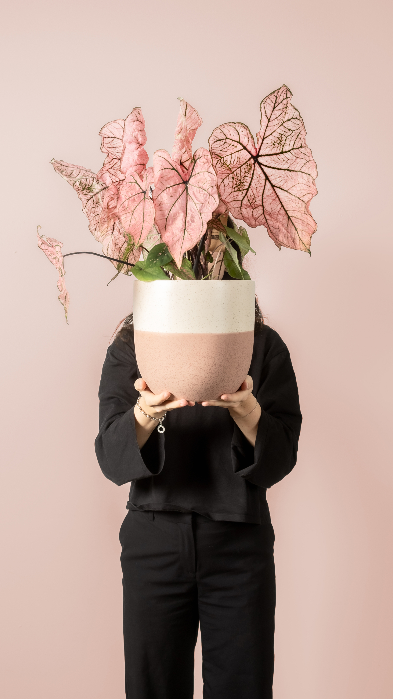

Foto 1
Du hältst oder interagierst mit der Pflanze im feey Topf. Torso und Hände im Bild, Gesicht optional. Die Pflanze ist der Star, aber deine Hände geben ihr Leben. Wie die feey «Action Shots» — die Pflanze wird von echten Händen gehalten.
- Natürliches Tageslicht, weich und warm
- Hintergrund: warmes Beige, weisse Wand oder dein echtes Zuhause
- feey Topf muss sichtbar und erkennbar sein
- Format: 9:16
- Du hältst die Pflanze auf Brusthöhe, Blick nach unten auf die Pflanze
- Du stellst die Pflanze auf ein Regal und rückst sie zurecht
- Du hebst die Pflanze aus der feey Verpackung — der «frisch angekommen»-Moment
- Nahaufnahme deiner Hände, die den feey Topf umfassen


Foto 2
Du und deine Pflanze in einem echten Moment: beim Giessen, Blätter abstauben, prüfen ob neue Triebe da sind, oder einfach bewundern. Beide sind wichtig — du als Mensch, der sich kümmert und sich für die Pflanze interessiert, und die Pflanze als das, worum es geht. Echte Aufmerksamkeit, keine gestellte Pose.
- Person und Pflanze zusammen sichtbar — Hände, Torso, gerne auch Gesicht
- Blickrichtung & Aufmerksamkeit gehen zur Pflanze
- Format: 9:16
- Natürliches Licht, ruhige, warme Stimmung
- Du giesst die Pflanze mit der feey Giesskanne — Fokus auf den Wasserstrahl und deine Hand
- Du wischst Staub von einem Blatt oder drehst die Pflanze zum Licht
- Du beugst dich über die Pflanze und schaust dir einen neuen Trieb an
- Du hältst ein Blatt vorsichtig in der Hand, prüfst die Unterseite
.jpeg)
.jpeg)
Foto 3
Die Pflanze in deinem echten Wohnraum, ohne Person im Bild. Das Licht ist der Hero. Warme Schatten an der Wand. Die Szene fühlt sich an, als wäre gerade jemand aus dem Bild getreten. Genau der feey «Interior/Lifestyle»-Modus.
- Golden Hour oder helles Morgenlicht
- Pflanze im feey Topf, prominent platziert
- Format: 9:16
- Umgebung: Wohnzimmer, Essbereich oder Schlafzimmer
- Pflanze auf einem Holztisch neben einem aufgeschlagenen Buch und Kaffee
- Pflanze auf einem Regal zwischen persönlichen Gegenständen
- Pflanze auf dem Fensterbrett — Sonnenlicht streift durch die Blätter
- Mehrere feey Pflanzen zusammen arrangiert — ein kleiner «Urban Jungle»-Moment
.jpeg)